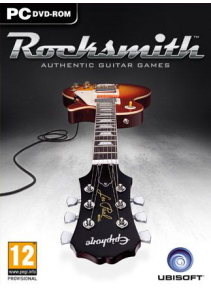

Rocksmith este un joc video de muzică produs de Ubisoft, lansat în octombrie 2011 pentru platformele Xbox 360 şi PlayStation 3 din America de Nord. Rocksmith a fost lansat pe PlayStation 3 şi Xbox 360 în septembrie 2012 pe pieţele din Australia şi pe pieţele europene şi octombrie 2012 în Japonia.În cadrul jocului, jucatorul progresează de-a lungul unei cariere (separat pentru chitară şi bas) unde se deschid mai multe melodii, moduri de joc şi provocari, pe măsură ce jucatorul câştigă puncte Rocksmith. În modul normal de joc, care se joacă cu o melodie, player-ul este prezentat cu un afişaj care prezintă o reprezentare a fretboard-ului chitarei, împarţită prin frezii numerotate şi şiruri colorate.
Preţ : 10,45 €